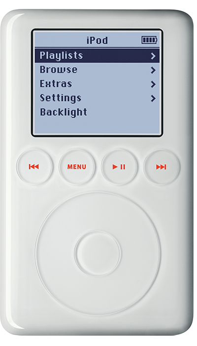

10,000 songs in your pocket.
The new super-slim iPod once again redefines what a digital music player should be. It’s lighter than 2 CDs, can hold up to 10,000 songs, thousands of digital photos and works as a personal voice recorder. Now you can sync with iTunes for Mac and Windows at blazing speeds, and take your entire music collection with you wherever you go. Available for Mac and Windows starting at $299.
iPod (dock connector) models have a dock connector on the bottom. Newer iPod models like iPod (Click Wheel) and iPod mini also have a dock connector, but the iPod (Dock Connector) has a touch wheel instead of a Click Wheel and the four control buttons are above the touch wheel. iPod (Dock Connector) models are referred to as third-generation iPod models.
